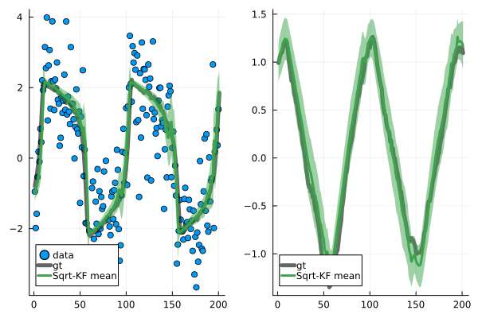

Square-root Kalman filter for car tracking
From "Bayesian Filtering and Smoothing" [1], example 4.3.
using LinearAlgebra
using Random
using Distributions
using PSDMatrices
using Plots
using PhDSEFirst, set up the state space model.
function simulate(Φ, Q, u, H, R, v, μ₀, Σ₀, N; rng = Random.GLOBAL_RNG)
x = rand(rng, MvNormal(μ₀, Σ₀))
states = [x]
observations = []
for i in 1:N
push!(states, rand(rng, MvNormal(Φ * states[end] + u, Q)))
push!(observations, rand(rng, MvNormal(H * states[end] + v, R)))
end
return states, observations
end
dt = 0.1
s1, s2 = 0.5, 0.5
q1, q2 = 1, 1
A = [1 0 dt 0;
0 1 0 dt;
0 0 1 0;
0 0 0 1]
Q = [q1*dt^3/3 0 q1*dt^2/2 0;
0 q2*dt^3/3 0 q2*dt^2/2;
q1*dt^2/2 0 q1*dt 0;
0 q2*dt^2/2 0 q2*dt]
sqrt_Q = PSDMatrix(cholesky(Q).U)
H = [1 0 0 0; 0 1 0 0]
d, D = size(H)
R = [s1^2 0; 0 s2^2]
sqrt_R = PSDMatrix(cholesky(R).U)
μ₀, Σ₀ = zeros(D), 2 * Matrix(1e-5 * I, D, D)
sqrt_Σ₀ = cholesky(Σ₀).UNext, generate an example state trajectory and according measurements.
ground_truth, data = simulate(A, Q, zeros(D), H, R, zeros(d), μ₀, Σ₀, 200, rng=MersenneTwister(3))Compute the filtering posterior.
sol = [(μ₀, sqrt.(diag(Σ₀)))]
fcache = SqrtKFCache(D, d)
fcache.μ .= μ₀
copy!(fcache.Σ.R, sqrt_Σ₀)
for y in data
sqrt_kf_predict!(fcache, A, sqrt_Q)
sqrt_kf_correct!(fcache, H, sqrt_R, y)
push!(sol, (copy(fcache.μ), sqrt.(diag(Matrix(fcache.Σ)))))
endFinally, plot the results.
scatter([y[1] for y in data], [y[2] for y in data], label="Measurements", markersize=2)
plot!([y[1] for y in ground_truth], [y[2] for y in ground_truth], label="True Location", linewidth=4, alpha=0.8)
plot!(
[y[1] for (y, s) in sol], [y[2] for (y, s) in sol],
label="Filter Estimate",
linewidth=4,
alpha=0.8,
legend=:bottomright,
)
savefig("sqrt_kalman_filter_example.svg")
References
[1] "Bayesian Filtering and Smoothing", Simo Särkka, Cambridge University Press, 2013.